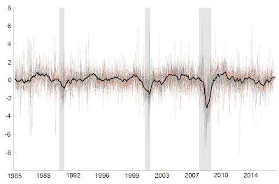
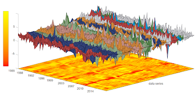

Papers
with B. Bok, D. Giannone, A. Sbordone, A. Tambalotti
Data, data, data . . . Economists know it well, especially when it comes to monitoring macroeconomic conditions—the basis for making informed economic and policy decisions. Handling large and complex data sets was a challenge that macroeconomists engaged in real-time analysis faced long before “big data” became pervasive in other disciplines. We review how methods for tracking economic conditions using big data have evolved over time and explain how econometric techniques have advanced to mimic and automate the best practices of forecasters on trading desks, at central banks, and in other market-monitoring roles. We present in detail the methodology underlying the New York Fed Staff Nowcast, which employs these innovative techniques to produce early estimates of GDP growth, synthesizing a wide range of macroeconomic data as they become available.-

-

Blogs
Just Released: Introducing the New York Fed Staff Nowcast
with G. Aarons, M. Cocci, D. Giannone, A. Sbordone, A. Tambalotti
- check out the Nowcasting Report
- some coverage Bloomberg Nowcast Coverage